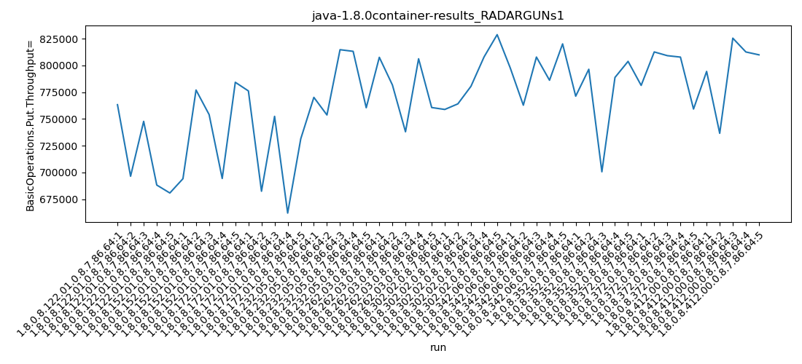
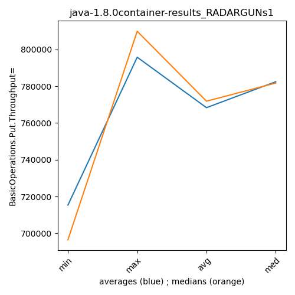

java-1.8.0 RADARGUNs1
Context at bottom
/home/jvanek/git/benchmarks-in-nested-virtualisation-toolchain/final_results/container_results/container-results_RADARGUNs1
java-1.8.0
RADARGUNs1
container-results_RADARGUNs1
- container-results_RADARGUNs1 - throughput get
- container-results_RADARGUNs1 - throughput put
- container-results_RADARGUNs1 - response mean time get
- container-results_RADARGUNs1 - response mean time put
container-results_RADARGUNs1 - throughput get
Expected number of java-1.8.0 JDKs: 7
1st avgmed_alljdks_metric:
/home/jvanek/git/benchmarks-in-nested-virtualisation-toolchain/final_results/result_processing.py /home/jvanek/git/benchmarks-in-nested-virtualisation-toolchain/final_results/container_results/container-results_RADARGUNs1 BasicOperations.Get.Throughput= False
values: [3053182, 2785919, 2991028, 2753258, 2723131, 2776607, 3107951, 3016018, 2777572, 3137388, 3104846, 2729552, 3009601, 2648167, 2925824, 3080763, 3014881, 3258667, 3252614, 3042152, 3230464, 3126426, 2952032, 3224612, 3042294, 3035752, 3056359, 3121985, 3231618, 3315154, 3190952, 3051164, 3231241, 3144964, 3280745]

Expected number of iterations: 5
final number of values: 35 out of 35
Pass rate: 100.0%
values: (2648167, 3315154, 3040710.942857143, 3053182)

** accuracy from all jdks and runs
more is better
MIN: 2648167
MAX: 3315154
AVG: 3040710.942857143
MED: 3053182
Relative differences 1:
MIN-MAX: 20.0 %
MIN-AVG: 13.0 %
MIN-MED: 13.0 %
MAX-MIN: -25.0 %
MAX-AVG: -9.0 %
MAX-MED: -9.0 %
AVG-MED: 0.0 %
stored to java-1.8.0.properties. sort | uniq that!
2nd avgmed_by_jdk_metric:
values: [2861303.6, 2963107.2, 2883598.0, 3129815.4, 3115165.6, 3152173.6, 3179813.2]

values: [2785919, 3016018, 2925824, 3080763, 3126426, 3121985, 3190952]

values: (2861303.6, 3179813.2, 3040710.942857143, 3115165.6)
values: (2785919, 3190952, 3035412.4285714286, 3080763)

** accuracy from all jdks where runs were avged
more is better
MIN: 2861303.6
MAX: 3179813.2
AVG: 3040710.942857143
MED: 3115165.6
Relative differences 1:
MIN-MAX: 10.0 %
MIN-AVG: 6.0 %
MIN-MED: 8.0 %
MAX-MIN: -11.0 %
MAX-AVG: -5.0 %
MAX-MED: -2.0 %
AVG-MED: 2.0 %
stored to java-1.8.0.properties. sort | uniq that!
** accuracy from all jdks where runs were medianed
more is better
MIN: 2785919
MAX: 3190952
AVG: 3035412.4285714286
MED: 3080763
Relative differences 1:
MIN-MAX: 13.0 %
MIN-AVG: 8.0 %
MIN-MED: 10.0 %
MAX-MIN: -15.0 %
MAX-AVG: -5.0 %
MAX-MED: -4.0 %
AVG-MED: 1.0 %
stored to java-1.8.0.properties. sort | uniq that!
container-results_RADARGUNs1 - throughput put
Expected number of java-1.8.0 JDKs: 7
1st avgmed_alljdks_metric:
/home/jvanek/git/benchmarks-in-nested-virtualisation-toolchain/final_results/result_processing.py /home/jvanek/git/benchmarks-in-nested-virtualisation-toolchain/final_results/container_results/container-results_RADARGUNs1 BasicOperations.Put.Throughput= False
values: [763308, 696475, 747757, 688257, 680827, 694162, 777021, 754064, 694399, 784240, 776171, 682488, 752416, 662072, 731476, 770161, 753714, 814693, 813159, 760474, 807575, 781733, 738018, 806224, 760664, 758864, 764089, 780495, 807931, 828751, 797691, 762839, 807808, 786154, 820135]

Expected number of iterations: 5
final number of values: 35 out of 35
Pass rate: 100.0%
values: (662072, 828751, 760180.1428571428, 763308)

** accuracy from all jdks and runs
more is better
MIN: 662072
MAX: 828751
AVG: 760180.1428571428
MED: 763308
Relative differences 1:
MIN-MAX: 20.0 %
MIN-AVG: 13.0 %
MIN-MED: 13.0 %
MAX-MIN: -25.0 %
MAX-AVG: -9.0 %
MAX-MED: -9.0 %
AVG-MED: 0.0 %
stored to java-1.8.0.properties. sort | uniq that!
2nd avgmed_by_jdk_metric:
values: [715324.8, 740777.2, 720924.6, 782440.2, 778842.8, 788026.0, 794925.4]

values: [696475, 754064, 731476, 770161, 781733, 780495, 797691]

values: (715324.8, 794925.4, 760180.1428571428, 778842.8)
values: (696475, 797691, 758870.7142857143, 770161)

** accuracy from all jdks where runs were avged
more is better
MIN: 715324.8
MAX: 794925.4
AVG: 760180.1428571428
MED: 778842.8
Relative differences 1:
MIN-MAX: 10.0 %
MIN-AVG: 6.0 %
MIN-MED: 8.0 %
MAX-MIN: -11.0 %
MAX-AVG: -5.0 %
MAX-MED: -2.0 %
AVG-MED: 2.0 %
stored to java-1.8.0.properties. sort | uniq that!
** accuracy from all jdks where runs were medianed
more is better
MIN: 696475
MAX: 797691
AVG: 758870.7142857143
MED: 770161
Relative differences 1:
MIN-MAX: 13.0 %
MIN-AVG: 8.0 %
MIN-MED: 10.0 %
MAX-MIN: -15.0 %
MAX-AVG: -5.0 %
MAX-MED: -4.0 %
AVG-MED: 1.0 %
stored to java-1.8.0.properties. sort | uniq that!
container-results_RADARGUNs1 - response mean time get
Expected number of java-1.8.0 JDKs: 7
1st avgmed_alljdks_metric:
/home/jvanek/git/benchmarks-in-nested-virtualisation-toolchain/final_results/result_processing.py /home/jvanek/git/benchmarks-in-nested-virtualisation-toolchain/final_results/container_results/container-results_RADARGUNs1 BasicOperations.Get.ResponseTimeMean True
values: [1129, 1071, 1152, 1060, 1075, 1054, 1064, 1111, 1093, 1061, 1118, 1108, 1084, 1135, 1124, 1109, 1106, 1134, 1105, 1068, 1142, 1137, 1112, 1140, 1044, 1227, 1167, 1098, 1129, 1079, 1111, 1137, 1095, 1210, 1085]

Expected number of iterations: 5
final number of values: 35 out of 35
Pass rate: 100.0%
values: (1044, 1227, 1110.6857142857143, 1109)

** accuracy from all jdks and runs
more is worse
MIN: 1227
MAX: 1044
AVG: 1110.6857142857143
MED: 1109
Relative differences 1:
MIN-MAX: 18.0 %
MIN-AVG: 10.0 %
MIN-MED: 11.0 %
MAX-MIN: -15.0 %
MAX-AVG: -6.0 %
MAX-MED: -6.0 %
AVG-MED: 0.0 %
stored to java-1.8.0.properties. sort | uniq that!
2nd avgmed_by_jdk_metric:
values: [1097.4, 1076.6, 1113.8, 1104.4, 1115.0, 1140.0, 1127.6]

values: [1075, 1064, 1118, 1106, 1137, 1129, 1111]

values: (1076.6, 1140.0, 1110.685714285714, 1113.8)
values: (1064, 1137, 1105.7142857142858, 1111)

** accuracy from all jdks where runs were avged
more is worse
MIN: 1140.0
MAX: 1076.6
AVG: 1110.685714285714
MED: 1113.8
Relative differences 1:
MIN-MAX: 6.0 %
MIN-AVG: 3.0 %
MIN-MED: 2.0 %
MAX-MIN: -6.0 %
MAX-AVG: -3.0 %
MAX-MED: -3.0 %
AVG-MED: -0.0 %
stored to java-1.8.0.properties. sort | uniq that!
** accuracy from all jdks where runs were medianed
more is worse
MIN: 1137
MAX: 1064
AVG: 1105.7142857142858
MED: 1111
Relative differences 1:
MIN-MAX: 7.0 %
MIN-AVG: 3.0 %
MIN-MED: 2.0 %
MAX-MIN: -6.0 %
MAX-AVG: -4.0 %
MAX-MED: -4.0 %
AVG-MED: -0.0 %
stored to java-1.8.0.properties. sort | uniq that!
container-results_RADARGUNs1 - response mean time put
Expected number of java-1.8.0 JDKs: 7
1st avgmed_alljdks_metric:
/home/jvanek/git/benchmarks-in-nested-virtualisation-toolchain/final_results/result_processing.py /home/jvanek/git/benchmarks-in-nested-virtualisation-toolchain/final_results/container_results/container-results_RADARGUNs1 BasicOperations.Put.ResponseTimeMean True
values: [4035, 3886, 4231, 3942, 3972, 3939, 3864, 3976, 3894, 3904, 4025, 3840, 4071, 3979, 4146, 3923, 4080, 4126, 4133, 3844, 4192, 4062, 3973, 4039, 4003, 4215, 4053, 3886, 4152, 3978, 4027, 4194, 4147, 4255, 4113]

Expected number of iterations: 5
final number of values: 35 out of 35
Pass rate: 100.0%
values: (3840, 4255, 4031.4, 4027)

** accuracy from all jdks and runs
more is worse
MIN: 4255
MAX: 3840
AVG: 4031.4
MED: 4027
Relative differences 1:
MIN-MAX: 11.0 %
MIN-AVG: 6.0 %
MIN-MED: 6.0 %
MAX-MIN: -10.0 %
MAX-AVG: -5.0 %
MAX-MED: -5.0 %
AVG-MED: 0.0 %
stored to java-1.8.0.properties. sort | uniq that!
2nd avgmed_by_jdk_metric:
values: [4013.2, 3915.4, 4012.2, 4021.2, 4053.8, 4056.8, 4147.2]

values: [3972, 3904, 4025, 4080, 4039, 4053, 4147]

values: (3915.4, 4147.2, 4031.4, 4021.2)
values: (3904, 4147, 4031.4285714285716, 4039)

** accuracy from all jdks where runs were avged
more is worse
MIN: 4147.2
MAX: 3915.4
AVG: 4031.4
MED: 4021.2
Relative differences 1:
MIN-MAX: 6.0 %
MIN-AVG: 3.0 %
MIN-MED: 3.0 %
MAX-MIN: -6.0 %
MAX-AVG: -3.0 %
MAX-MED: -3.0 %
AVG-MED: 0.0 %
stored to java-1.8.0.properties. sort | uniq that!
** accuracy from all jdks where runs were medianed
more is worse
MIN: 4147
MAX: 3904
AVG: 4031.4285714285716
MED: 4039
Relative differences 1:
MIN-MAX: 6.0 %
MIN-AVG: 3.0 %
MIN-MED: 3.0 %
MAX-MIN: -6.0 %
MAX-AVG: -3.0 %
MAX-MED: -3.0 %
AVG-MED: -0.0 %
stored to java-1.8.0.properties. sort | uniq that!
/home/jvanek/git/benchmarks-in-nested-virtualisation-toolchain/final_results/container_results/container-results_DACAPO
java-1.8.0
RADARGUNs1
/home/jvanek/git/benchmarks-in-nested-virtualisation-toolchain/final_results/container_results/container-results_JMH
java-1.8.0
RADARGUNs1
/home/jvanek/git/benchmarks-in-nested-virtualisation-toolchain/final_results/container_results/container-results_J2DBENCH
java-1.8.0
RADARGUNs1
/home/jvanek/git/benchmarks-in-nested-virtualisation-toolchain/final_results/container_results/container-results_RADARGUNs3
java-1.8.0
RADARGUNs1
/home/jvanek/git/benchmarks-in-nested-virtualisation-toolchain/final_results/container_results/container-results_SPECJBB
java-1.8.0
RADARGUNs1
pass rates:
container-results_RADARGUNs1=100.0%
Context:
- container_results
- RADARGUNs1